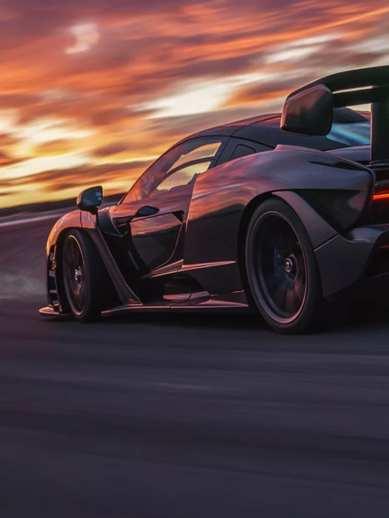
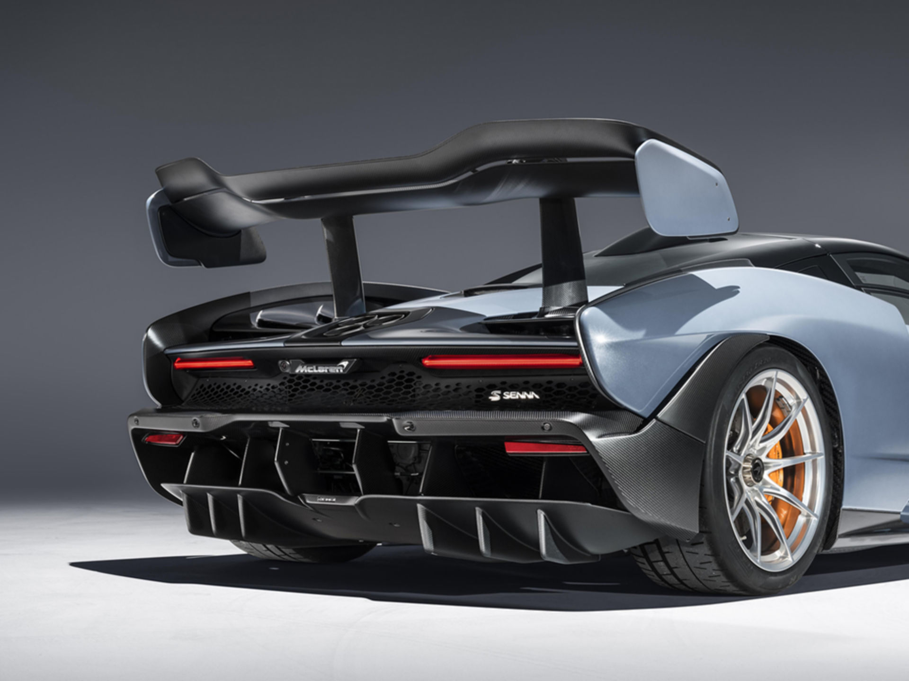
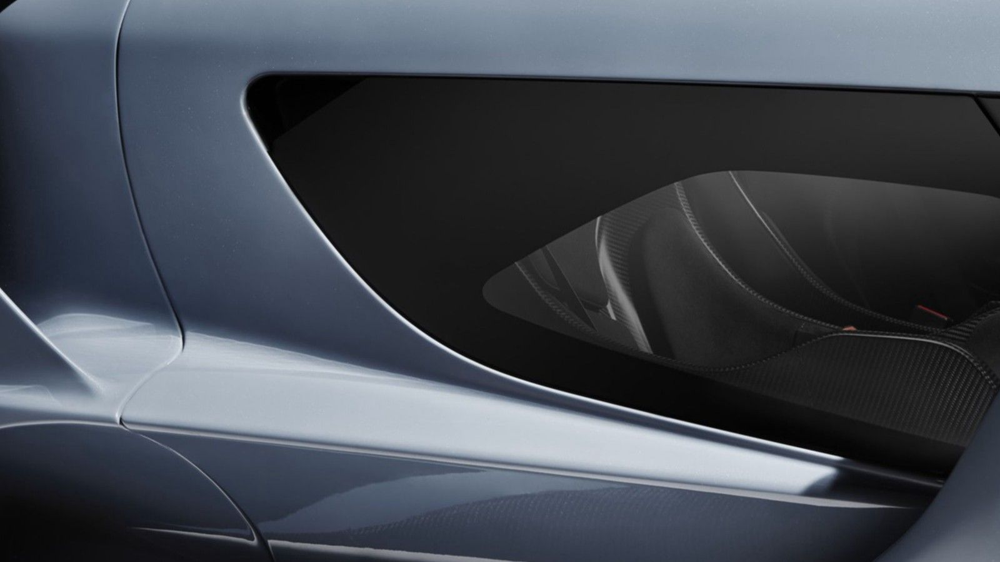
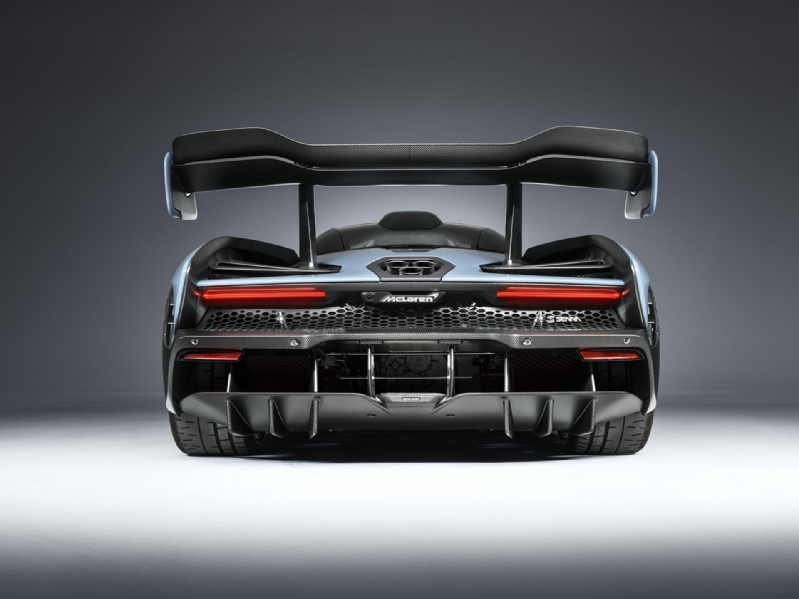
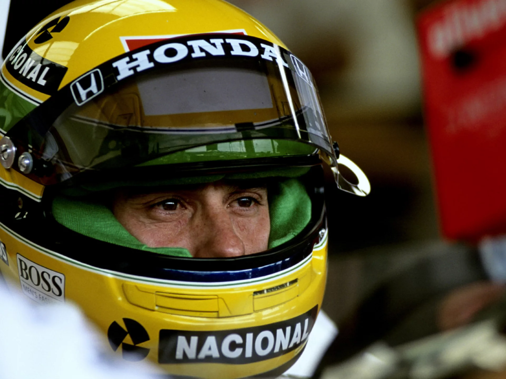
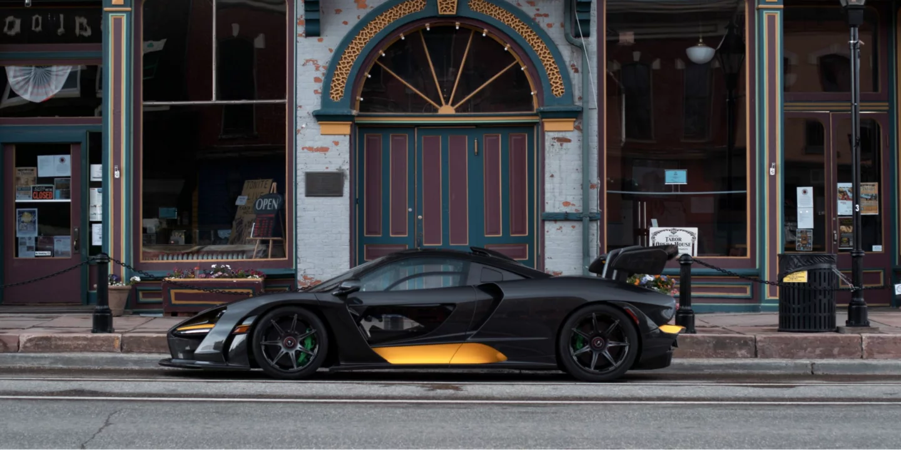

McLaren Senna
Challenge the impossible
THE McLAREN SENNA IS THE PERSONIFICATION OF McLAREN'S DNA AT ITS MOST EXTREME, CREATING THE PUREST CONNECTION BETWEEN CAR AND DRIVER
It is the fastest track-focused road hypercar we have ever built, and it will set the fastest lap times of any McLaren to date. That is what has driven us to build a track car that is unashamedly without compromise. One that is legalised for road use, but not sanitised to suit it. Nothing else matters but to deliver the most intense driving experience around a circuit.
Inspired by one of McLaren's greatest racing drivers, the McLaren Senna is utterly dedicated to allowing the driver to be the best they can possibly be.
PERFORMANCE
The McLaren Senna has a single-minded purpose. In the pursuit of the most rewarding and intuitive driving experience, pioneering active aerodynamics generate unprecedented levels of downforce. It is also the lightest vehicle we have built since the iconic F1, with our most powerful road car engine to date. This combination creates a staggering power-to-weight ratio of 668PS-per-tonne (659bhp). It is the most direct and responsive McLaren ever built, surpassing even the McLaren P1™ GTR, to create the purest connection with the driver. The McLaren Senna is a new track benchmark for McLaren. Our fastest track-focused road hypercar.

DESIGN
The McLaren Senna is the ultimate distillation of the company’s ‘form follows function’ design mantra. To observe the detailed work that has gone into every aerodynamic element of the McLaren Senna is mesmerising. To experience it all working in unison is truly incredible. The resulting 800kg of downforce in Race mode at significantly less than maximum speed (155mph or 250km/h) is phenomenal, and the McLaren Senna creates, maintains and controls its aerodynamic performance to ensure the driver has the confidence to explore the limits such downforce unlocks.
INNOVATION
We think of the McLaren Senna as a race car – we have designed and built it to perform on the track first and foremost. The active aerodynamics are pioneering, and the unprecedented visibility achieved through the unique glazed doors gives the driver total confidence. Exhaustive, fearless engineering has led us to revaluate and reassess every component, no matter how small or insignificant, to maximise performance. We have used carbon fibre for the monocoque, the body and everywhere we need lightness, rigidity and strength – it is the reason the McLaren Senna is the lightest and fastest track-focused road vehicle McLaren Automotive has ever built.
SPECIFICATION
800PS and 800Nm from a 4.0-litre twin-turbocharged V8, the most powerful internal combustion engine McLaren has ever built. 800kg of downforce made possible by pioneering active aerodynamics. The lightest McLaren since the iconic F1 with dry weight of under 1200kg. A power-to-weight ratio of 668PS-per-tonne (659bhp) that ensures it will set the fastest lap times of any McLaren road car to date. 0-124mph (0-200km/h) in 6.8 seconds and a top speed of 208mph (335km/h). Next-generation carbon ceramic brakes that utilise racing technology. Discover the savage performance of the McLaren Senna.
THE LEGEND
When Ayrton Senna arrived at McLaren in 1988 he was an outstanding young driver, but he wasn’t yet the completechampion he would become during his time with the team. At 28 years old he was starting his fifth season in Formula 1 with six wins under his belt; at McLaren he would convert all that promise into three World Drivers’Championships.
THE AYRTON SENNA INSTITUTE
Envisioned by Ayrton Senna before his untimely death, the charitable work of the Instituto Ayrton Senna (IAS) is a remarkable legacy for one of McLaren’s greatest racing drivers. Established in 1994 by his sister Viviane, six months after his fatal crash at the San Marino GP, the non-profit organisation now benefits up to 1.6 million children and young people in Brazil. On the racetrack he was one of the greatestdrivers of alltime, but his off-track achievements are arguably even greater. Thanks to the provision of comprehensiveeducation, the IAS prepares the youth of Brazil to live in the 21st century and build a better future. McLaren isimmenselycproud to support the IAS, and to honour Ayrton Senna’s legacy at the highest level of motorsport with our most track-focused road car ever.
MOUNTAIN HIGH: A McLAREN SENNA IN COLORADO
Incurable car collector Kathy Cargill has found a new favourite way to explore her automotive passions. She’s the proud owner of four McLarens
REGISTER INTEREST
Contact a retailer or register your interest to be kept up to date with the latest McLaren Automotive news
Performance
Next chapter